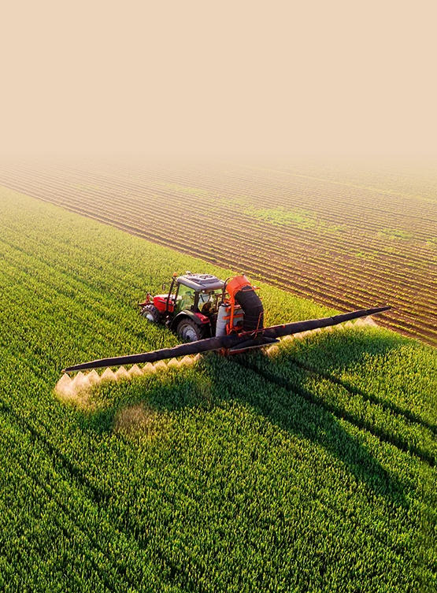

diammonium phosphate (dap) fertilizer supplier
State the exact identity, grade, guaranteed nutrient analysis, form, application, quantity, packing and destination.
Fertilizer grade · Phosphate fertilizer salt · DAP
Diammonium phosphate is a concentrated ammonium phosphate fertilizer supplying nitrogen and phosphorus for direct soil application and fertilizer blending.
Share guaranteed analysis, form, fertilizer use, quantity, destination and documents.

Direct product answer
Diammonium phosphate is a concentrated ammonium phosphate fertilizer supplying nitrogen and phosphorus for direct soil application and fertilizer blending.
18-46-0 is a common fertilizer designation; supplied analysis varies Chemical identity alone does not establish fertilizer grade, nutrient guarantee, solubility, crop suitability or market registration. Compare the offered source against the required label and agronomic program.
Buyer-intent guide
Use these long-tail procurement questions when comparing a China supplier, fertilizer manufacturer source, distributor offer or bulk quotation.
State the exact identity, grade, guaranteed nutrient analysis, form, application, quantity, packing and destination.
Compare source-specific specification, nutrient declaration, current COA, packing, Incoterm and delivery window.
Where relevant, confirm solubility, insolubles, source-water compatibility, stock concentration and crop program.
Request SDS, private specification or TDS, representative COA, batch COA, traceability and destination-market files.
Application screening
These are qualification areas, not universal crop recommendations, nutrient rates, label approvals or guaranteed agronomic outcomes.
Evaluate direct soil-applied NP fertilizer programs against the current private specification, crop and soil plan, formulation trials and destination-market requirements.
Evaluate NPK and bulk fertilizer blends against the current private specification, crop and soil plan, formulation trials and destination-market requirements.
Evaluate pre-plant nutrient programs based on soil testing against the current private specification, crop and soil plan, formulation trials and destination-market requirements.
Evaluate industrial fertilizer formulation and distribution against the current private specification, crop and soil plan, formulation trials and destination-market requirements.
Technical selection
Evaluate fertilizer grade and guaranteed N–P2O5 analysis against the current private specification, crop and soil plan, formulation trials and destination-market requirements.
Evaluate granule size, hardness, moisture and caking behavior against the current private specification, crop and soil plan, formulation trials and destination-market requirements.
Evaluate free ammonia, water insolubles and relevant impurities against the current private specification, crop and soil plan, formulation trials and destination-market requirements.
Evaluate placement, soil conditions, labeling and local registration against the current private specification, crop and soil plan, formulation trials and destination-market requirements.
Private technical documentation
Bespring Chemical does not publish product specifications for this fertilizer raw material online. Contact sales for the current source-specific specification or TDS and confirm its revision, analytical methods and acceptance criteria.
Request the signed current specification or TDS, SDS, test methods, representative COA and batch COA.
Confirm guaranteed analysis, expression basis, labeling, fertilizer registration, trace elements and destination requirements.
Review FAO plant-nutrition guidance, FAO fertilizer specifications guidance and NIH PubChem chemical records. Agronomic suitability and fertilizer registration remain crop, soil, formulation and jurisdiction specific.
Agronomic note: This supplier page does not prescribe nutrient rates or establish crop suitability. Base fertilizer selection and application on soil, water and tissue data, qualified agronomic advice, compatibility testing, the approved label and local environmental requirements.
Storage and handling
Fertilizer buyer questions
Diammonium phosphate is a concentrated ammonium phosphate fertilizer supplying nitrogen and phosphorus for direct soil application and fertilizer blending. Use should follow soil or tissue testing, crop recommendations and applicable fertilizer rules.
18-46-0 is a common fertilizer designation; supplied analysis varies. Request the current source-specific guaranteed analysis and confirm whether nutrients are expressed as N, P2O5 and K2O or on another legally required basis.
Bespring Chemical does not publish fertilizer product specifications online. Contact sales for the current source-specific specification or TDS, analytical methods and representative COA.
No grade is established by the chemical name alone. Fertilizer, food and technical products have different intended uses, documentation, impurity controls and regulatory requirements.
Provide the exact identity and form, required guaranteed analysis, fertilizer application, quantity, packing, destination, registration documents, Incoterm and delivery date.
Last reviewed 2026-07-26 by Bespring Chemical technical and export team.
Related sourcing
Browse the fertilizer-grade phosphate and potassium salt portfolio.
Discuss a private specification, documents, sample and commercial requirements.
Review sourcing and export support for international chemical procurement.
Specification-led fertilizer sourcing
Share guaranteed analysis, grade and form, fertilizer application, critical limits, quantity, packing, destination and document list.